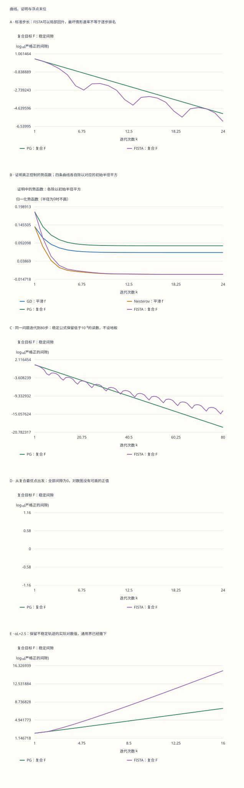

本页目录
凸优化 II · 把一阶方法的每一步接到收敛证明
先修：凸性、光滑梯度、次梯度与 cvx-01 的原始–对偶间隙。目标：从一个近端步推出三点不等式，再分别拼出普通法的望远镜和加速法的势函数；知道速率、残差、数值舍入各能说明什么。
学习层：一条下降曲线，离一份收敛证明还差什么？
先固定同一个目标比较两种算法。看见动量法短暂回升时，不急着判它失败，而去找证明真正控制的量。把步长推过定理允许的范围，再看曲线和“理论界”是否仍然是同一回事。
实验保留两组问题：GD/Nesterov 解平滑二次函数；PG/FISTA 解加了 L1 正则的复合目标。每一步都保存取梯度的位置、迭代点、残差、理论界与势函数。这里的最优点可解析计算，因此还能把“相减得到的零”和稳定公式给出的微小正间隙并排检查。
无脚本对照：下图与表读取同一份六组固定记录。表中统一报告 PG 的最后一行，避免混用目标。

| 预设 | 迭代 | α | 原始相减间隙 | 稳定间隙 | 映射范数 | 标准步长 |
|---|---|---|---|---|---|---|
| safe | 24 | 0.25 | 6.16661359e-06 | 6.16661359e-06 | 0.00351186947 | 是 |
| long | 80 | 0.25 | 0 | 6.26481538e-20 | 3.53971963e-10 | 是 |
| stationary | 24 | 0.25 | 0 | 0 | 0 | 是 |
| unstable | 16 | 0.625 | 24939726.4 | 24939726.4 | 14124.078 | 否 |
| sparse | 24 | 0.25 | 0 | 0 | 0 | 是 |
| unregularized | 24 | 0.25 | 4.53057325e-06 | 4.53057325e-06 | 0.00301017383 | 是 |
下载六组完整固定记录。稳定间隙与直接相减的不同不是更换目标，而是同一代数表达式采用不同数值计算方式。
严格为正的读数才进入对数图，零或负的浮点读数会留下断点，完整表格仍保留原值。没有一条人为的最低误差水平线。所有记录来自有限二维实验；一般速率由下文的不等式证明。
1. 先固定问题，再比较算法
本页一般理论处理 \(F=f+h\)：\(f\) 在全空间可微、凸且梯度为 \(L\)-Lipschitz；\(h\) 真闭凸；最优解 \(x^*\) 存在，初始点在 \(\operatorname{dom}h\) 中。实验取
光滑常数 \(L=4\)、强凸常数 \(\mu=1\) 来自 Hessian 的最大、最小特征值。默认 \(\lambda=1/2,x_0=(5,4)\)。平滑最优点为 \((2,-2)\)、值为0；复合最优点为 \((3/2,-15/8)\)、值为 \(59/32\)。用不同最优值算出的两种间隙不能直接排大小来评算法冠军。
对角二次的一维最优条件是 \(0\in q_i(x_i-c_i)+\lambda\partial|x_i|\)，所以 \(x_i^*=\operatorname{soft}_{\lambda/q_i}(c_i)\)。旋钮改变正则项时，复合参照点会随之变化，平滑问题不变。
2. 一个上方二次模型如何给出下降
沿线段积分梯度，有
因此当 \(0<\alpha\le1/L\) 时，\(f(u)+\langle\nabla f(u),v-u\rangle+\|v-u\|^2/(2\alpha)\) 是全局上界。最小化这个上界给出 \(v=u-\alpha\nabla f(u)\)，并有
这里下降来自明确的上界，不来自图形看起来像一个碗。某个二次函数在更大步长下仍下降，并不把该步长变成所有 \(L\)-光滑凸问题的通行证。
3. 近端步：步长与正则系数要分开
对 \(\alpha>0\)，定义
平方项使目标强凸；真闭凸 \(h\) 有仿射下界，平方项又保证强制性，因此这里的最小点存在且唯一。对 \(h(z)=\lambda\|z\|_1\)，分段最优条件给
阈值是乘积 \(\alpha\lambda\)。例如 \(v=3,\alpha=1/4,\lambda=2\) 时结果是2.5；把阈值写成2会解另一个问题。对非空闭凸集 \(C\) 的示性函数，近端算子就是欧氏投影，且与正步长无关。
令 \(x^+=T_\alpha(u)\)，其次梯度条件是 \((u-x^+)/\alpha-\nabla f(u)\in\partial h(x^+)\)。因此近端梯度映射 \(G_\alpha(u)=(u-T_\alpha(u))/\alpha\) 为零恰好等价于 \(0\in\nabla f(u)+\partial h(u)\)，也就是全局最优性。它不等于只检查 \(\nabla f(u)=0\)。
4. 三点不等式：后面两种证明的共同零件
将上面的次梯度不等式用于任意 \(z\in\operatorname{dom}h\)，再加上 \(f(x^+)\) 的光滑上界及 \(f(z)\) 的凸下界，得到
用 \(2\langle u-x^+,x^+-z\rangle=\|z-u\|^2-\|z-x^+\|^2-\|x^+-u\|^2\) 配方，就有
标准步长使最后一项非正，可以舍去。注意这是关于三个点 \(u,x^+,z\) 的不等式：\(u\) 是实际取梯度的点；加速算法中它通常不是上一迭代点。实验将这两个位置分列。
5. 普通近端梯度：从望远镜到最后一个点
令 \(x_k=T_\alpha(x_{k-1})\)，\(\delta_k=F(x_k)-F^*\)。三点不等式取 \(z=x^*\) 给 \(2\alpha\delta_k\le\|x_{k-1}-x^*\|^2-\|x_k-x^*\|^2\)。从1加到 \(K\) 后中间项抵消：
还差一步才能控制最后一点。三点式改取 \(z=u=x_{k-1}\)，给出 \(F(x_k)\le F(x_{k-1})\)；所以 \(K\delta_K\le\sum_{k=1}^K\delta_k\)，最终
实验普通法的势函数为 \(\|x_k-x^*\|^2+2\alpha\sum_{j=1}^k\delta_j\)，理论上不增。取 \(h=0\) 就是 GD；取 \(h=\iota_C\) 就是投影梯度。投影情形需要投影最优条件提供的三点式，不能仅在无约束证明中假定受约束最优点满足 \(\nabla f(x^*)=0\)。
6. 强凸情形：为什么会得到几何收缩
若 \(f\) 还 \(\mu\)-强凸，令 \(\theta=\alpha\mu\in(0,1]\)。近端步最小化的上模型记为 \(Q_\alpha(z;x)\)。强凸下界给
取 \(z=(1-\theta)x+\theta x^*\)；\(F\) 的强凸性再给 \(F(z)\le(1-\theta)F(x)+\theta F^*-\mu\theta(1-\theta)\|x-x^*\|^2/2\)。合并后距离项系数是 \((\theta^2/\alpha-\mu\theta)/2=0\)，因此
这里假设强凸性来自光滑部分，正好覆盖实验；不是把所有复合问题的强凸参数随意代入。对纯 GD，也可从强凸下界最小化得到 \(f(x)-f^*\le\|\nabla f(x)\|^2/(2\mu)\)，与第2节下降式相接。
条件数 \(\kappa=L/\mu\) 决定标准步长下每步收缩。函数差、距离平方、距离本身是不同量，不能共用同一个指数而不说明开平方关系。
7. 加速迭代：先把索引写准确
本页采用 FISTA 日程，统一从 \(k=1\) 开始。令 \(t_1=1,y_1=x_0\)，之后
\(h=0\) 时这是这里的 Nesterov 形式，\(h\) 为 L1 项时是 FISTA。第一次外推系数为0；不能把第一步就加非零动量的程序套进同一份证明。
关键恒等式是 \(t_{k+1}^2-t_{k+1}=t_k^2\)；由递推可归纳 \(t_k\ge(k+1)/2\)。这两条分别负责望远镜配平与最后的 \(k^2\) 阶数。
8. 加速证明：完整写出势函数的配平
定义 \(z_k=t_kx_k-(t_k-1)x_{k-1}\)，\(z_0=x_0\)，以及
对第4节的三点式分别取 \(z=x_{k-1}\) 与 \(z=x^*\)，以 \(1-1/t_k\) 和 \(1/t_k\) 加权。两个平方差中相同的方差项抵消，再乘 \(t_k^2\)，得到
对 \(k\ge2\)，外推公式使右边第一个向量等于 \(z_{k-1}-x^*\)；同时 \(t_k(t_k-1)=t_{k-1}^2\)。于是 \(E_k\le E_{k-1}\)。对 \(k=1\)，\(t_1-1=0,y_1=x_0\)，直接给 \(E_1\le E_0\)，不需要虚构 \(t_0\)。因此
受控制的是函数差与辅助点距离的组合。证明没有得到 \(\delta_{k+1}\le\delta_k\)，也没有把加速法与普通法每一行比较。实验同时显示势函数与原始目标，正是为检查这层区别。
9. 速率下界的适用对象是什么
“一阶最优阶”需要指定信息模型。在线性张成模型中，从0出发的新迭代点限于过去梯度的线性张成。高维链式二次函数的梯度每次只能暴露下一个坐标，尚未探索的尾部使误差不能过快消失。令维数随允许的步数增长，可构造 \(L\)-光滑凸难例给出常数倍 \(LR^2/(k+1)^2\) 的下界。
这个论证不是说一个固定二维二次函数会永远阻碍所有方法，也不是说 Hessian、结构化线性代数和高阶 oracle 不能更快。去掉线性张成假设，要另用抵抗式 oracle 构造；随机算法还需对应的随机化下界。可核对 Bubeck 原稿的§3.5与§5.1，分别读清下界模型和复合问题的结构假设。
动量与欠阻尼运动的类比有用，但离散递推不等于微分方程。\(\ddot x+3\dot x/t+\nabla f(x)=0\) 是相应小步长时间缩放下的连续模型；需要处理 \(t=0\) 的奇点与极限条件，不能直接替代上面的离散势函数证明。
10. 用可行对偶点给停止条件
对实验中的 \(F(x)=\sum_i q_i(x_i-c_i)^2/2+\lambda\|x\|_1\)，共轭计算给对偶目标
从任意迭代点构造 \(y_i=\operatorname{clip}(q_i(c_i-x_i),-\lambda,\lambda)\)，就能给合法下界，不必知道最优点。原始–对偶间隙分解为
因此 \(F(x)-F^*\le F(x)-D(y)\)。在实数精确运算下这是次优证书；浮点版本需保留计算残差和舍入余量，不能把末位负数裁成0再称严格证明。实验保留两项与直接相减结果，不把它们的末位差异藏掉。
同样，梯度映射零点有精确最优含义，但有限容差下的映射范数到目标误差需要附加界。不能只因目标连续几步“没变”就停止而不看尺度与残差。
11. 软阈值、Moreau 与数值末位
从近端最优条件 \(w=(v-p)/\alpha\in\partial h(p)\)，通过共轭得到 \(p\in\partial h^*(w)\)。这正是 \(w=\operatorname{prox}_{h^*/\alpha}(v/\alpha)\) 的最优条件，所以
取 L1 正则时，第二部分就是到双范数盒子的投影。尺度因子不可省略；\(\alpha=1\) 才退化成无尺度的简式。
计算很小的函数差时，两个都约为1.84375的浮点数可能相减为0。令 \(d=x-x^*\)，可用代数恒等式
分离二次误差与折角余量。在最优坐标为正时方括号简化为 \(\lambda(|x_i|-x_i)\)，负时为 \(\lambda(|x_i|+x_i)\)，为零时直接用 \(\lambda|x_i|-q_i c_i x_i\)。这避免先相减两个大目标值；它仍是浮点计算，不是任意精度保证。
12. 迁移题与完整解答
1．默认配置下，四种算法第一步分别是什么？
\(\nabla f(5,4)=(3,24)\)，\(\alpha=1/4\) 给平滑步 \((17/4,-2)\)。阈值 \(\alpha\lambda=1/8\) 再给复合步 \((33/8,-15/8)\)。加速第一步的动量系数为0，所以分别与 GD、PG 相同。平滑间隙为 \(81/32\)，复合间隙为 \(441/128\)，不能混用参照值。
2．为什么复合最优点处的普通梯度并不为零？
在 \((3/2,-15/8)\)，梯度为 \((-1/2,1/2)\)，其范数为 \(1/\sqrt2\)。L1 次梯度贡献 \((1/2,-1/2)\) 恰好抵消。近端梯度映射为0；若坚持把普通梯度降到0，会走向另一个目标的最优点。
3．α=1.25/L 不满足通用条件，为何 GD 仍可稳定？
二次误差沿 Hessian 特征方向乘 \(1-\alpha q_i\)。这里 \(\alpha=5/16\)，两个因子为 \(11/16\) 与 \(-1/4\)，绝对值均小于1，所以这个 GD 实例收敛。该计算利用了具体谱；不能推出通用近端或加速定理在同一步长下成立。
4．怎样给投影梯度写一个非零梯度的最优点？
最小化 \((x+1)^2/2\) 且 \(x\ge0\)，最优点为0但梯度为1。任意 \(\alpha>0\) 都有 \(\Pi_{[0,\infty)}(0-\alpha)=0\)。投影的法锥抵消梯度；证明应使用投影最优条件或第4节的三点不等式。
5．加速势函数递减为什么不推出函数值单调？
\(E_k\) 包含 \(2\alpha t_k^2\delta_k\) 与 \(\|z_k-x^*\|^2\)。第二项的下降可以补偿第一项的上升，且第一项还有变化的权重。因此总和不增并不使 \(\delta_k\) 单调。证书控制的是其可允许的上界，不是每一步的实际排序。
6．从最优点开始时，归一化势函数应画成什么？
此时 \(R^2=0\)，精确迭代保持最优点，未归一化势函数为0。但 \(E_k/R^2\) 是 \(0/0\)，没有定义；应显示“不适用”并保留原表，不画一条伪造的0或1。对数间隙图同样不能画 \(\log0\)。
7．把 Moreau 的尺度手算一次。
取 \(h(x)=2|x|,\alpha=1/4,v=3\)。第一部分为 \(3-1/2=2.5\)；\(h^*\) 是 \([-2,2]\) 的示性函数，\(\operatorname{prox}_{h^*/\alpha}(12)=2\)。两部分合成 \(2.5+(1/4)2=3\)，尺度完全一致。
8．若一张二维图比 1/k² 快，是否推翻一阶下界？
没有。下界是指定函数类、信息模型与维数条件下的最坏情形声明。这个固定二维强凸实例更容易，还具有已知对角结构。它不承担所有步数的高维链式难例；一次实验也不能交换“每个方法存在难例”的量词。
下一课把同样的“最优条件—算子—残差”路线用于算子分裂与 ADMM。先把本页每一步的意义读清，再判断拆分算法究竟在逼近什么。